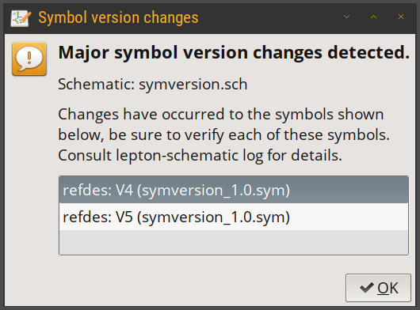
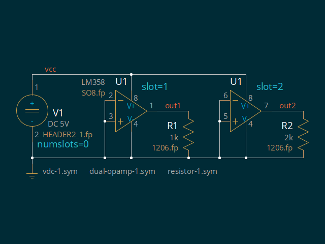

Schematics
- simple - simple schematic
- hier - simple hierarchical schematic
- symversion - test handling of symversion changes
- slots - simple schematic with slotted components
simple
simple schematic for testing
lepton-netlist(1)
[ download ]
simple.sch:

hier
simple hierarchical set of schematics for testing
lepton-netlist(1)
[ download ]
main.sch:

subcircuit.sch:

project hierarchy:

files:
gafrc [ download ]
geda.conf
lepton.conf
symversion
schematic to test handling of symversion changes
[ download ]

should raise this dialog box:

and produce the following log messages:
WARNING: symversion_bad.sym (no refdes): could not parse symversion (XXX) in symbol file
WARNING: symversion_none.sym (V2): could not parse attached symversion (XXX)
WARNING: symversion_none.sym (V3): symversion attached, but absent inside symbol file
WARNING: symversion_1.0.sym (V4): MAJOR symversion change (attached: 0.000 < library: 1.000)
WARNING: symversion_1.0.sym (V5): MAJOR symversion change (attached: 0.900 < library: 1.000)
WARNING: symversion_1.0.sym (V?): symbol is newer than symbol in library (1.100 > 1.000)
WARNING: symversion_1.1.sym (V7): minor symversion change (attached: 1.000 < library: 1.100)
slots
simple schematic with slotted components
[ download ]
slots.sch:
